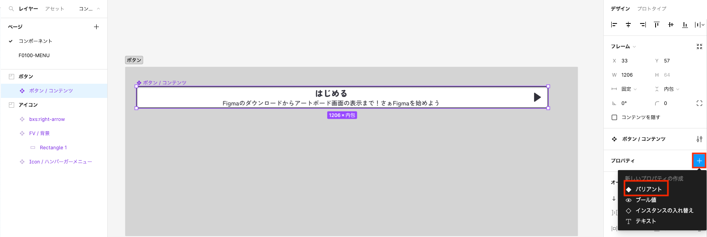
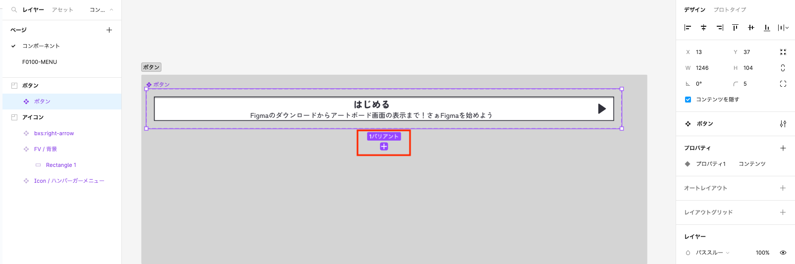
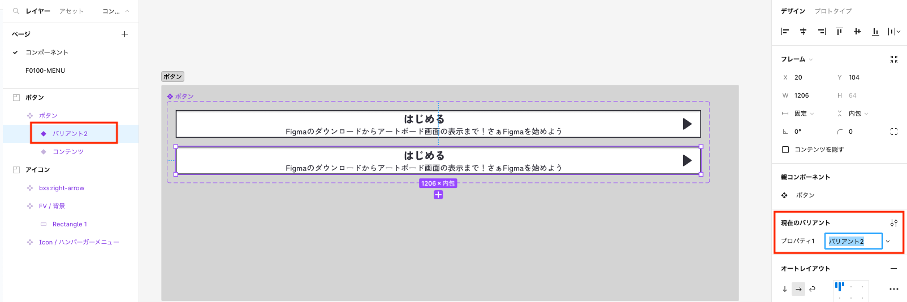
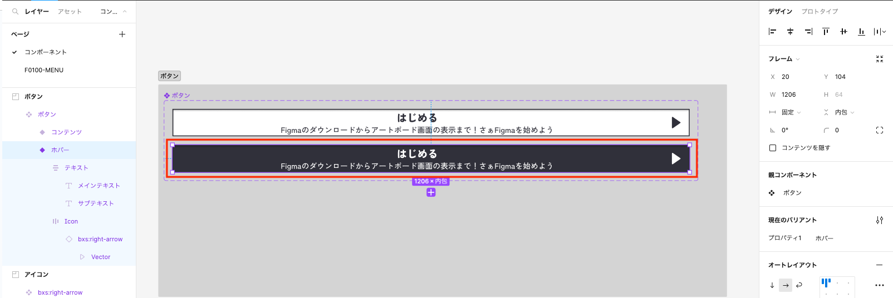
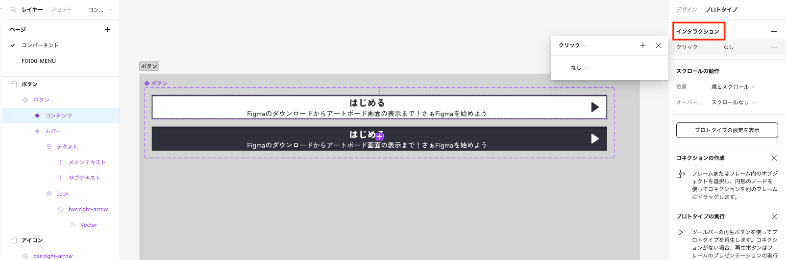
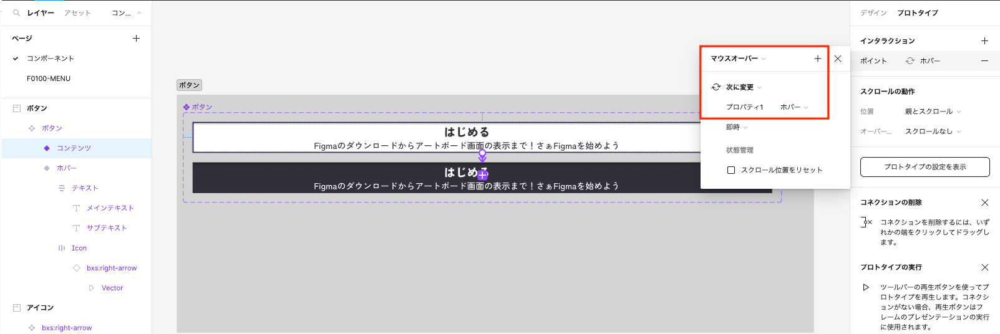
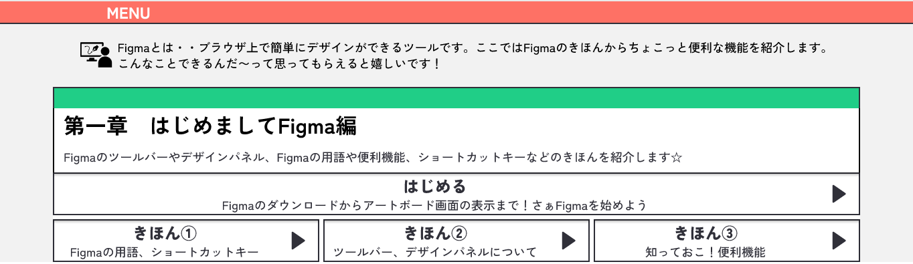
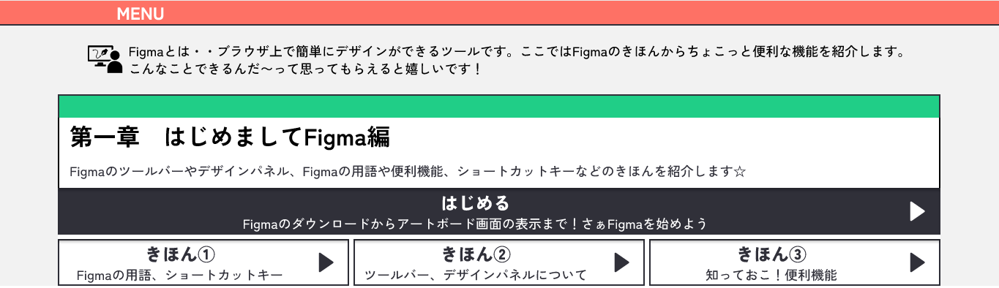

ボタンにホバーを入れてみた
2023.06.25
プロトタイプの応用編となります☆ マウスカーソルを当てるとホバーがついて「ボタンだよ〜。押せるよ〜」ということが分かりやすいのではないかと思いFigmaのプロトタイプで導入できる方法を調べてみました！
方法：ホバー
前提：ボタンを作成済み ※今回はMENUページのボタンに実装します
①デザインパネル＞プロパティ＞「バリアント」を選択
②アートボードで対象のオブジェクト＞「➕バリアント」を押下
③作成したバリアントの名前を分かりやすく「ホバー」等に変更します（任意）
④③のオブジェクトに、マウスカーソルを当てた際のアクションを設定
⑤トリガーとなるオブジェクトを選択し、プロトタイプパネル＞インタラクション「➕」を選択
⑥トリガーとアクションを設定
①デザインパネル＞プロパティ＞「バリアント」を選択
⬇︎
②アートボードで対象のオブジェクト＞「➕バリアント」を押下
⬇︎
③作成したバリアントの名前を分かりやすく「ホバー」等に変更します（任意）
⬇︎
④③のオブジェクトに、マウスカーソルを当てた際のアクションを設定
例ではマウスカーソルを当てた際に色を反転させたいので、background-colorをブラック、font colorをホワイトに設定
⬇︎
⑤トリガーとなるオブジェクトを選択し、プロトタイプパネル＞インタラクション「➕」を選択
⬇︎
⑥トリガーとアクションを設定
「マウスオーバー」を選択＞「次に変更」を選択＞③で名称を変更した「ホバー」を選択
＼結果／ 設定したボタンにカーソルを当てると・・！
⬇︎
アクションのホバーが入りました！

ちょっとしたアクションですが、お客様もデザインのイメージがつきやすくなるのではないかと思います。
ボタンやリンクにぜひ入れてみてください☆